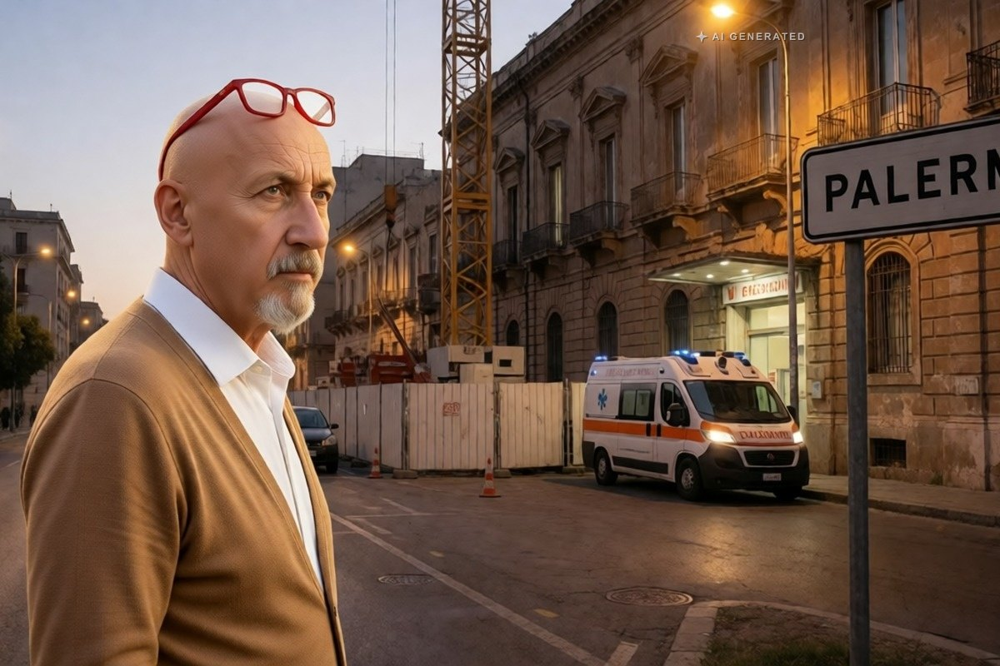

Sicilia · 7 novembre 2026
L'ospedale Ingrassia di Palermo chiude per lavori, e per almeno tre anni

I sindacati chiedono dove finiranno pronto soccorso, rianimazione e ambulatori. L'assessore Caruso li ha convocati per l'11 novembre. Nove sindaci avevano già scritto a Schifani: l'ospedale serve oltre centomila persone.
di Franco Zanghì
L'ospedale Ingrassia di Palermo, in corso Calatafimi, chiuderà per lavori di ristrutturazione e di efficientamento. Secondo le organizzazioni sindacali i cantieri partiranno nel 2027 e dureranno almeno tre anni. Le prime indicazioni sulla durata sono arrivate a metà ottobre, in un incontro con la direzione dell'Asp di Palermo; comunicazioni ufficiali, dicono i sindacati, non ce ne sono.
Un ospedale per oltre centomila persone
All'Ingrassia non guardano soltanto i palermitani, ma anche i comuni dell'entroterra: Monreale, Partinico, Corleone, Piana degli Albanesi, San Giuseppe Jato. Secondo i loro sindaci è il riferimento per oltre centomila persone. I numeri citati dal sindacato Cimo-Fesmed e attribuiti all'Asp parlano di 133 posti letto al 31 dicembre 2025 e di 28.765 accessi al pronto soccorso nel corso del 2025.
Il progetto e la domanda che resta aperta
Il progetto di ristrutturazione, approvato nei mesi scorsi dalla commissione tecnica dell'assessorato regionale alle Infrastrutture, vale 26 milioni di euro: adeguamento strutturale, impiantistico e architettonico, pronto soccorso ricollocato al piano seminterrato, un nuovo polo tecnologico, nuovi impianti elettrici e di climatizzazione, rete fognaria rifatta, tetti a giardino pensile.
Quello che manca è l'altra metà del piano. Le sigle sindacali, dai medici agli infermieri, chiedono di sapere dove saranno trasferiti il pronto soccorso, l'anestesia e rianimazione, la terapia intensiva cardiologica e gli ambulatori per tutta la durata dei lavori, e che fine faranno i lavoratori, compresi quelli delle ditte esterne di pulizia, mensa e vigilanza. L'Asp fa sapere di lavorare da mesi alla riorganizzazione dei servizi e di avere già svolto diverse conferenze di servizi.
L'assessore regionale alla Salute Marcello Caruso ha convocato i sindacati per l'11 novembre. Già a fine ottobre nove sindaci del Palermitano avevano scritto al presidente della Regione Renato Schifani: spostare tutto negli altri ospedali senza prima potenziarli rischia di paralizzare la rete sanitaria della città, con pronto soccorso più affollati e liste d'attesa più lunghe.
Il punto
Nessuno sostiene che i lavori non vadano fatti: un ospedale vecchio va rimesso a posto, e 26 milioni non sono una cifra simbolica. Ma l'ordine delle cose conta. Prima si dice dove vanno i malati, poi si chiude. Qui, a sentire sindacati e sindaci, si rischia di fare il contrario. I cantieri hanno già una data e una durata: il piano per i pazienti, no.
Fonti
- Ansa, «Chiusura ospedale Ingrassia a Palermo, assessore Caruso convoca sindacati», 6 novembre 2026
- Balarm, «Palermo, 26 milioni per rifare l'Ingrassia: ecco il progetto (ma resta il nodo chiusura)», 4 novembre 2026
- Giornale di Sicilia, «Ospedale Ingrassia, i sindacati: prevista una chiusura per almeno tre anni», 19 ottobre 2026
- LiveSicilia, «Ingrassia tre anni chiuso per lavori: i sindacati chiedono chiarezza»
Date e durata dei lavori sono quelle riferite dalle organizzazioni sindacali: non esiste finora un atto pubblico che le confermi. Le fonti non coincidono sull'avvio del cantiere, indicato dall'Ansa nel 2027 e da Balarm a partire da luglio. Il quadro andrà aggiornato dopo l'incontro con l'assessore dell'11 novembre.